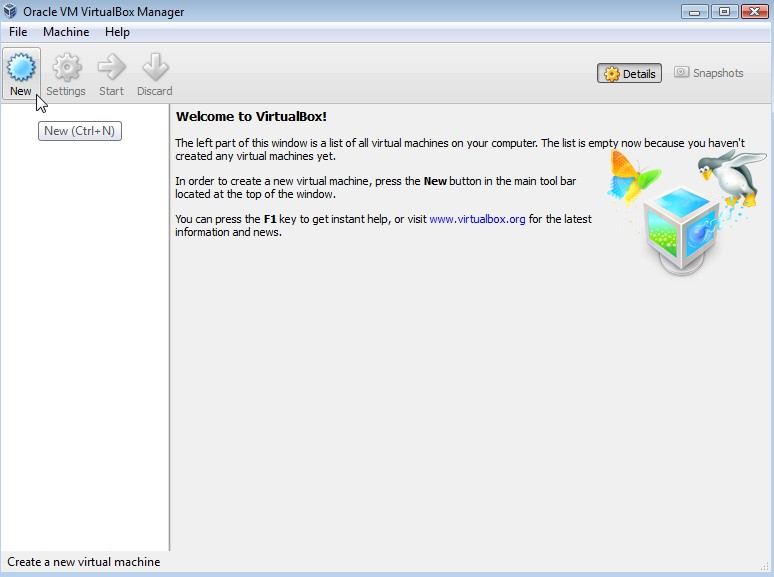
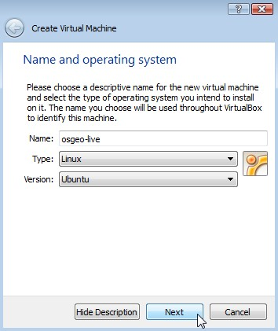
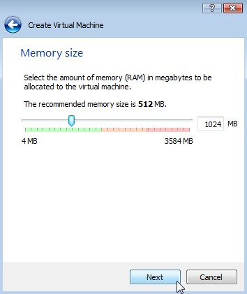
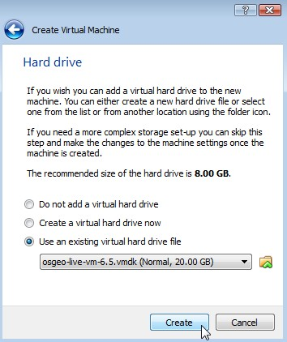
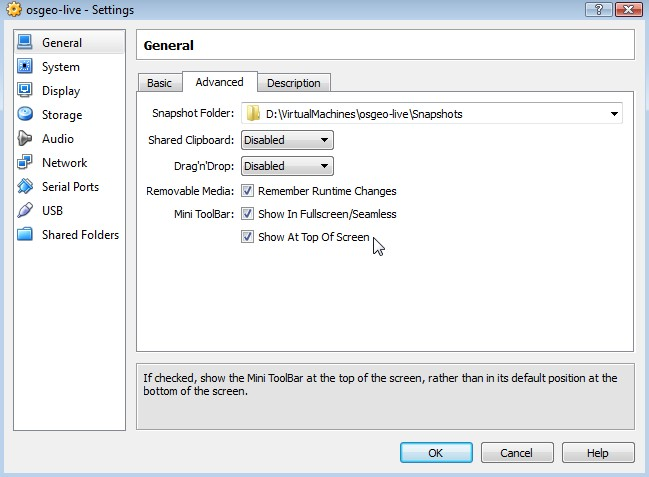
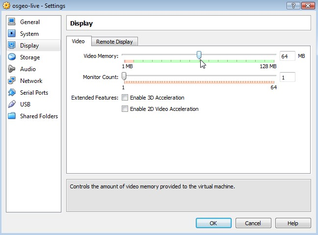
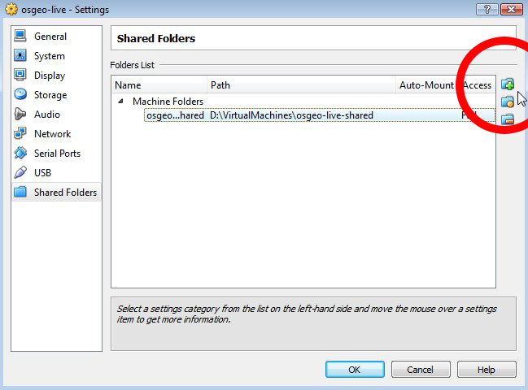
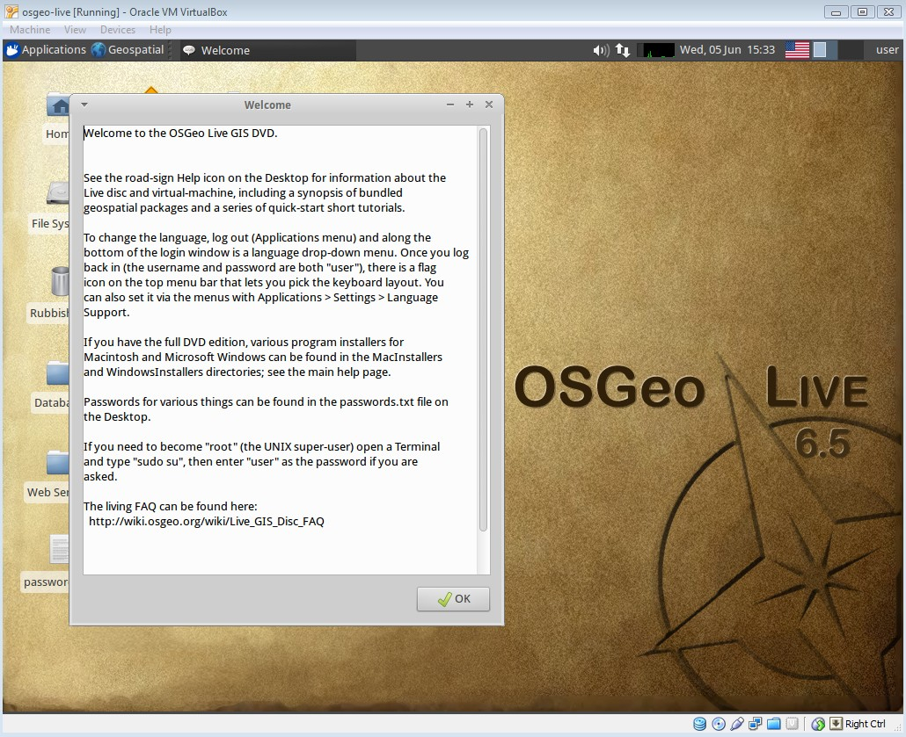
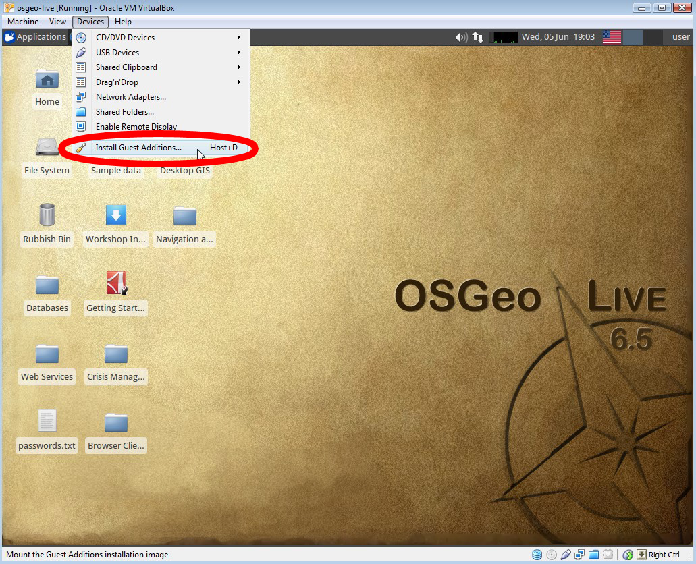
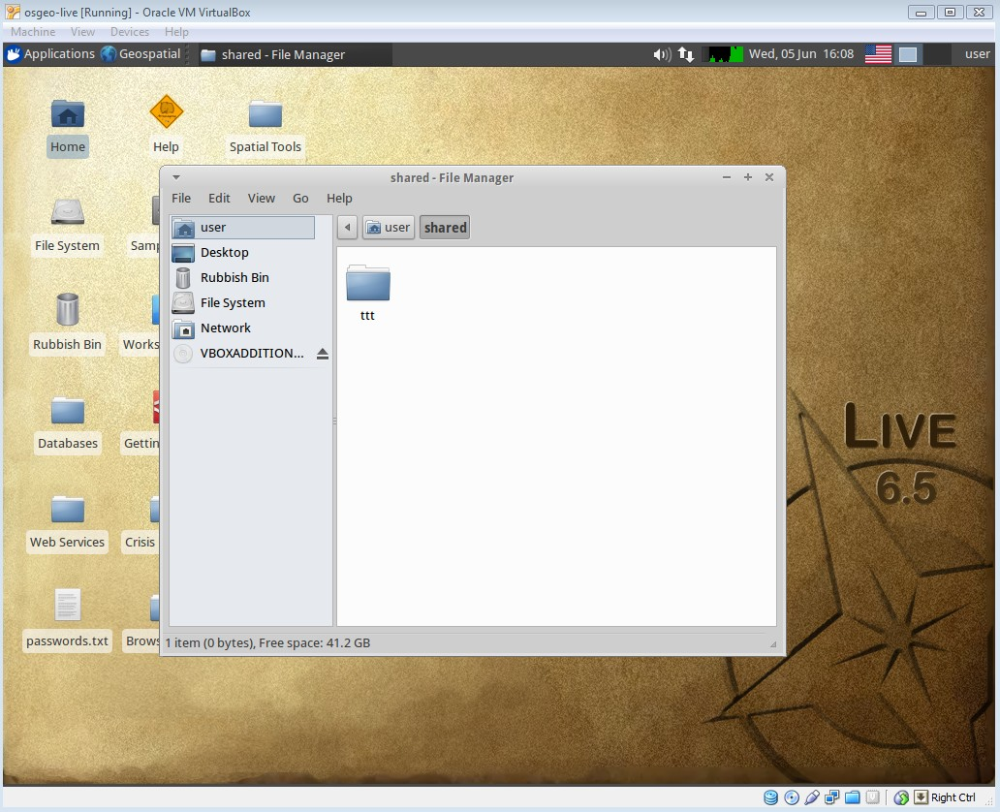

The pycsw workshop requires the following installed locally:
Note
We recommend using the OSGeo-Live Virtual Machine method, although OSGeo-Live is available also through a bootable DVD or USB drive.
Caution
You’ll need a minimum of 10GB of free hard disk space, as well as a machine with 2GB of RAM.
start VirtualBox (“Oracle VM VirtualBox)
click on the New button to create a VM
enter “osgeo-live” for the name, and select Type: Linux and Version: Ubuntu
In the next screen set the memory to 1024 MB (or more if your host computer has more than 4GB).
Continue to the next screen and choose “Use existing hard disk”. Then click on the button (a folder icon) to browse to where you saved the *.vmdk file. Select this file, press Next and Create.
Once the VM is created, click on the Settings button. In the “General” section, go to the Advanced tab, and click to select “Show at top of screen” for the Mini toolbar.
In the “Display” section and increase video memory to 32 or 64 MB.
In the “Shared Folders” section, click the “Add folder” (green + icon on the right) to find a directory on your machine that you wish to share inside the VM.
Once the “Folder path” and “Folder name” are defined, click OK, and close the settings window.
Now bootup the VM by clicking the Start (green arrow) button. OK any warning messages.
To improve video performance and enable the shared folders, open the Devices menu and click “Install Guest Additions”.
Next, on the desktop you will see an icon named “VBOXADDITIONS_4.2.12_84980”, click it (this mounts the drive). You can then close this window.
Open a Terminal window (in top left click “Applications” / “Accessories” / “Terminal Emulator”
In the Terminal, execute the following:
user@osgeolive:~$ sudo apt-get install linux-headers-`uname -r`
password: user
user@osgeolive:~$ cd /media/VBOXADDITIONS_4.2.12_84980
user@osgeolive:/media/VBOXADDITIONS_4.2.12_84980$ sudo ./VBoxLinuxAdditions.run
reboot the machine (click on “user” in top-right of desktop, and select “Reboot”)
Open a Terminal window again, and execute the following (where “osgeo-live-shared” is the name you entered earlier in the Settings for the shared folder):
user@osgeolive:~$ mkdir shared
user@osgeolive:~$ sudo mount -t vboxsf -o uid=user,rw osgeo-live-shared /home/user/shared
You can now create a test folder on your local machine (in my case “ttt”) and then view it within the virtual machine.
{kind=link}
{kind=link}
{kind=link}